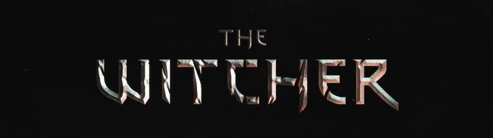

Mé jméno je Geralt, Geralt z Rivie. Patřím do cechu zaklínačů.
Mou prací je za peníze zbavovat svět krvelačných příšeř,
které vnikly do našeho světa při konjunkci sfér. Mezi lidmi mám
mnoho přezdívek, někteří mi říkají Bílý Vlk, jiní Řezník z Blavikenu.
Nejčastěji mě však prostí lidé nazývají mutantem. Tak dlouho již
zástupci našeho cechu bloudí po světě a bojují s příšerami, že prostí lidé
již začali samotné zaklínače za příšery považovat. Vede je k tomu několik
důvodů. Těmi hlavními jsou, že zaklínači vznikli pomocí magie, díky čemuž
máme nelidsky rychlé reflexy a můžeme sesílat jednoduchá znamení. Před bojem
s příšerami také požíváme lektvary, jež zlepšují naše smysly. Například
lektvar kočka nám umožňuje vidět ve tmě, dalším efektem jsou ale také
svítící oči, které lidi velmi děsí. Při zkoušce trav, což je proces přeměny
člověka v zaklínače také přicházíme o emoce. V tomto směru jsem mezi
zaklínači výjimka, protože mně mé emoce zůstaly, což mi dost ztěžuje práci.
Nikdo neví přesně, co to způsobilo, pravděpodobně je to tím, že mojí
matkou je čarodějka, navzdory tomu, že čarodějky nemůžou mít děti, ale to
jsme trošku odbočili od tématu.
Nicméně tyto skutečnosti vedly lidi
k názorům, že zaklínači jsou také monstra. Dokonce vznikla i kniha
Monstrum, aneb vědmáka (další název pro zaklínače, poznámka autora)
připodobnění. Tato publikace ještě více prohloubila nenávist chovanou
k zaklínačům, výhradně ve vyšších kruzích, neboť prostý lid většinou
neumí číst. Abych ale nebyl zase příliš negativní, v mém světě nežijí
jenom špatní lidé. A hlavně v něm nežijí pouze lidé, ačkoliv je jich
nejvíce, a jak řekl můj přítel trpaslík Zoltan Chivay, neustále se množí.
Dalšími rasami v mém světě jsou tedy trpaslíci, dále zde máme triády,
čarodějky a čaroděje, dopplery, stagnující rasu elfů nebo nevraživé
obyvatele podmořského světa. Trpaslíci, neboli ogaři, jak si sami říkají
jsou féroví chlápci, kteří mluví tak, jak jim zobáky narostly. Už si ani
nevzpomínám, kdy jsme se poprvé potkali, ale zažili jsme spolu mnohá
dobrodružství. Například jsme se potkali na výpravě za drakem, na které
jsme potkali i Yen, tedy Yeneffer z Vegenburgu. Nejtvrdohlavější,
nejnamyšlenější (a že čarodějky jsou obecně dost namyšlení),
nejtemperamentnější, nejpanovačnější, ale zároveň i nejkrásnější
čarodějku na světě, vonící šeříkem a angreštem. Poprvé jsem se s ní
seznámil, když jsme s Marigoldem, to je jeden bard, který se ke mně
kdysi připojil na cestách. Nejprve byl dost na obtíž, vlastně pořád je
dost na obtíž a jeho zálety za vdanými paničkami, jež nám způsobily
nesčetná příkoří neustále neberou konce, ale za těch několik let mi
Marigold velmi přirostl k srdci a považuji jej za svého nejlepšího
přítele. Myslím, že je to oboustranné, ačkoliv jeho počáteční úmysly
jsou zřejmé, díky dosti přibarveným baladám o Bílém Vlku se Marigold
proslavil. Jakési jednostranné obchodní partnerství, které mi přineslo
slávu, o kterou jsem nijak nestál, se však nakonec změnilo v ryzé
přátelství.
Takže, když jsme jednou takhle s Marigoldem chytali ryby,
omylem jsme vypustili džina z láhve, který na Marigolda seslal kouzlo,
které ho umlčelo. To, že to bylo ve skutečnosti můj džin, neboť já jsem
ho pustil z lampy a stal se jeh pánem, není asi úplně podstatné.... Okamžitě
jsem popadl Marigolda a vydal se hledat pomoc. Nalezl jsem ji u Yeneffer z
Vegenburgu. Čarodějka vypadala úchvatně, navíc působila velmi dospěle, což mi
imponovalo. Když jsem jí řekl o Marigoldovi, souhlasila, že se o něj
postará, což by bylo velmi milé gesto, kdyby nechtěla něco na oplátku.
Na svých cestách jsem se již naučil, že všichni čarodějové chtějí něco
na oplátku, než jsem však stačil odhalit čarodějčiny úmysly, bylo již
pozdě. Nedobrovolně jsem se stal nástrojem čarodějčinina vyřizování účtů,
neboť mě očarovala a přinutila dát za uši dvě radním, kteří se k ní
během jejího pobytu ve městě nechovali zrovna mile. Kvůli takové
malichernosti, kterou Yeneffer nedokázala přenést přes srdce jsem tedy
skončil ve vězení. Ukázalo se, že čarodějka měla šílený plán. Rozhodla se
spoutat a zajmout džina, neboť jej chtěla použít pro vlastní účely. Snažila
se získat znovu schopnost mít děti, kterou ztratila při přeměně v čarodějku.
Jenže džina nemohla ovládnout, protože já jsem ještě nevyslovil poslední
přání. Abych zachránil čarodějce život, přál jsem si navždy provázat svůj
osud s jejím. Potom jsem s čarodějkou chvíli žil, ale příliš nám to neklapalo,
a tak jsme se rozešli. Jako vlivem osudu na sebe však pořád narážíme a já
na ni nemůžu přestat myslet. Mí přátelé nechápou, co na takové namyšlené
semetrické megeře vidím, ale část mého srdce bude vždy patřit vůni šeříku a
angreštu....
Další důležitou postavou v mém životě je princezna Cirilla,
dítě z Cintry. Stala se mým dítětem osudu, čímž se naše osudy taktéž provázaly.
Ciri miluji jako vlastní dceru a Yen se jí stala matkou. Dalšími významnými
postavami ze světa zaklínače je Vesemir, nejstarší ze zaklínačské školy Vlka (
i zaklínači mají své školy, nejznámnějšími jsou škola Vlka, škola Medvěda,
škola Kočky, škola Gryfa a škola Zmije), jenž byl mým mentorem a učitelem.
Dále mí vrstevníci, zaklínači Lambert a Eskel. Potom tu máme čarodějku Triss
Ranuncul (v anglickém originále Merigold, což by se ale pletlo s Marigoldem,
proto Merigold), kterou jsem v jedné fázi svého života vyměnil za Yeneffer,
což Yen pořád nemůže zkousnout, důkazem budiž to, že mě za neodstranění
postele na Kaer Morhen (kdysi majestátné sídlo zaklínačů, nyní rozbořeno
rozzuřeným davem v důsledku vyprovokovaného pochodu proti zaklínačům,
takové pochody byly jednu dobu velmi časté a dopomohly k tomu, že nyní
se již žádní další zaklínači necvičí), kterou jsem jeden čas sdílel i s
Triss teleportovala do pěkně ledového rybníka. Z dalších postav bych zmínil
Djisktru, Zlatého draka, Doddyho (ne ten z Harryho Pottera), Foltesta, Istreda,
Felippu Eilhart, Vernona Roche, císaře Emhyra, Cracha an Craite a jeho děti,
druida Myšilova, Keiru Metz, Fringillu Vigo, Ves atd. Postav ve světě zaklínače
je strašně moc, a pokud chcete znát opravdu všechny, doporučuji Vám přečíst si
knížky vydané Andrzejem Sapkowským. Zde je seznam:
Knihy o zaklínači
- Zaklínač I. Poslední přání
- Zaklínač II. Meč osudu
- Sága o zaklínači (o Ciri)
- Další dílo
Zaklínač I. Poslední přání
Cesta z níž není návratu
Úvodní povídka vypráví o dobrodružství čarodějky Visenny a
rytíře Korina (rodiče Geralta). Této dvojici se podaří
porazit zlého čaroděje Fregenala a kostěje, příšeru stvořenou
čarodějem. Po boji dvojice odchází a s otcem Geralta se již
nesetkáme. S Visennou se Geralt setká ještě v povídce
Něco více.
Hlas rozumu
Jednotlivé části této povídky se prolínají celou knihou,
Geralt v nich uvozuje své další povídky. Většina povídky
se odehrává v klášteru Melitelé.
Zaklínač
Zaklínač navštíví hlavní město Temerie, Wizimu. Zdejší obyvatele
již dlouho sužuje nějaký netvor. Geralt zjistí, že se jedná
o nenaroznou dceru krále Foltesta, která se vlivem kletby proměnila
ve strigu. Geraltovi se nakonec podaří princeznu odčarovat, ačkoliv
při tomto činu málem sám zahyne.
Zrnko pravdy
Tato povídka připomína pohádku Kráska a zvíře. Geraůt se v ní
setkává s netvorem s lidskou duší žijícím v opuštěném zámku.
Spolu s netvorem žije v zámku ještě rusalka, do níž se netvor
zamiloval. Z rusalky se ale nakonec vyklube bruxa, která se
pokusí oba muže zabít. Netvor bruxu zabije a tím, že zabil
dívku, kterou miloval, ze sebe strhne kletbu.
Menší zlo
Geralt přijíždí do Blavikenu. Zde se setkává s čarodějem
Stregobolem, který si ho chce najmout na zabití Renfri, princezny,
jež se narodila během zatmění a je tedy prokletá kletbou
černého slunce. Čaroděj Geralta přesvědčuje, že zabitím dívky
vykoná menší zlo. Geralt odmítne. Později se Geralt setká i s
Renfri. Ukáže se, že čaroděj připravil Renfri o život princezny
a ona se museka naučit postarat se o sebe sama. Stala se z ní
vražedkyně, která má nyní vlastní tlupu. Jejím jediným cílem
je pomsta Stregoborovi. Jenže čaroděj se před ní schovává ve věži
a ona se k němu nemůže dostat. přesvědčuje Geralta, aby ho pro ni
zabil, protože tím vykoná menší zlo. Geralt opět odmítne a řekne
svoji legendární hlášku: Zlo je zlo, menší, větší, proto když si
mám vybrat mezi větším a menším zlem, nevolím vůbec. Nakonec se
ukáže, že Renfri plánuji vraždit lidi na jarmarku, aby vylákala
Stregobor. Geralt se ji rozhodne zastavit, pobije Renfrinu bandu
a nakonec zabije i samotnou Renfri. Navzdory tomu, že zachránil
obyvatele Blavikenu, je z města vyhnán a je mu připsána přezdívka
Řezník z Blavikenu.
Otázka ceny
Geralt je hostem tanečního banketu v Cintře. Dcera královny
Calanthe Pavetta si při této příležitosti má vybrat ženicha.
Ukáže se, že na Pavettu má nárok rytíř Ježek (jeho jméno není
náhodou, rytíř má totiž od svítání do půlnoci tvář ježka), kterému
byla Pavetta přislíbena jejím zesnulým otcem. Před patnácti lety
totiž rytíř Ježek zachránil Pavettina otce a ten mu slíbil
splnit jakékoliv přání. Rytíř si tedy přál to, co král nečeká,
že najde doma, a ukázalo se, že na krále doma čeká dcera Pavetta.
Pavetta Ježka miluje, ale Calanthe je proti sňatku, proto na ples
také pozvala zaklínače. Nabízí Geraltovi obrovskou sumu za zabití
Ježka, zaklínač všakz morálních důvodů odmítá. Calanthé tedy přikáže
strážím, aby Ježka zabily. To rozčílí Pavettu, ve které se probudí
skrytá moc, a smyslůzbavená Pavetta začne níčit vše v místnosti.
Geraltovi s druidem Myšilovem se nakonec podaří Pavettu zastavit.
Královna nakonec souhlasí se svatbou, což zruší Ježkovu kletbu. Rytíř
poté děkuje zaklínači za pomoc a zavazuje se mu splnit jakékoliv
přání. Zaklínač spíše z vtipu (zaklínač nemá moc smysl pro humor a
tento okamžik tomu rozhodně nepomohl) požádá Ježka o to, co už má,
ale neví o tom. Po chvilce se ukáže, že Pavetta čeká dítě, o čemž
neměl Ježek ani ponětí.
Konec světa
Geralt přijme zakázku na zbavení vesničanů čerta, který krade obilí.
V této povídce se zaklínač také poprvé setkává s Marigoldem, jenž
se rozhodne zaklínače doprovázet, aby získal nějaký námět na hrdinskou
baladu. Situace se ukáže trošku komplikovanou. Geralta s Marigoldem
zajme skupina elfů, pro které krade čert obilí. Elfové jsou na pokraji
hladomoru a krádeže obilí jsou jejich jediným zdrojem obživy. Navzdory
tomu, že jsou tito elfové na pokraji vyhynutí, jsou velmi pyšní a
odmítají požádat kohokoliv o pomoc. Geralta s Marigoldem nakonec
zachraní polní panna, které jsou elfové bezmezně oddaní. Polní panna
nechce žádné krveprolití, a tak elfové oba zajatce propouští. Čert
odchází s nimi.
Poslední přání
Marigolda očaruje džin. Geralt vyhledá pomoc u čarodějky Yeneffer.
Ta marigolda sice vyléčí, ale očaruje zaklínače. Geralt, ovládaný
Yeneffer, se potom ve městě pomstí všem lidem, kteří byli zlí
na čarodějku. Geralt se probudí až ve vězení. Ukáže se, že čarodějka
plánuje ovládnout džina a stát se jeho pánem. To se jí však nemohlo
povést, protože skutečným pánem džina je Geralt a on ještě nevyslovil
poslední přání. Aby zaklínač zachránil Yeneffer, přeje si, aby se
jejich osudy navždy propojily, což se mu vyplní.
Zaklínač II. Meč osudu
Hranice možností
Zaklínač se účastní výpravy na draka. Členy výpravy jsou i trpaslík
Yarpen Zigrin, šlechetný rytíř Tři kavky nebo čarodějka Yeneffer, se
kterou se Geralt kvůli čarodělčině panovačnosti, pýše, namyšlenosti
a neochotnosti rozešel. Čarodějka se netají tím, že má na zaklínače
stále ještě zlost (čarodějky dokážou být dlouho uražené, obzvláště Yen).
Výprava narazí v horách na legendárního zlatého draka. Ten s pomocí
zaklínače, čarodějky a Yarpena s jeho kumpány zabije zlé sekáče a
zažene zbytek výpravy. Legendární drak se potom přemění zpět do podoby
rytíře Tři kavky a vysvětlí ostatním, že lidskou podobu využívá k
ochraně ostatních draků. Poté odletí pečovat o raněného zeleného draka.
Geralta se usmíří s Yen a dají se znovu dohromady.
Střípek ledu
Geralt žije spolu s Yen. Idylické soužití však naruší Geraltovo zjištění,
že čarodějka za jeho zády udržuje poměr s čarodějem Istredem, jehož zná
ze studií. Protože si čarodějka není schopná mezi oběma muži vybrat,
domluví se Geralt s čarodějem na souboji na život a na smrt. Yeneffer
nechce, aby došlo ke krveprolití, a proto město opustí sama. Geralt,
který vidí, že souboj ztratil smysl. odmítne bojovat a město taky
opustí.
Věčný oheň
Geralt v této povídce pomáhá svému známému, pulčíkovi Diantymu
Biberveldtovi. Ten byl na své cestě do Novigradu přepaden a
a v Novigradu zjistil, že si někdo přivlastnil jeho totožnost.
Nakonec se ukáže , že za pulčíka se vydával dopler Dudu, jehož
druh má schopnost měnit tělesné proporce. Pulčík se na dopplera
nejprve hněvá, ale vztek ho přejde, když zjistí, že doppler uzavřel
pulčíkovým jménem velmi výnosné obchody. Z těchto dvou se nakonec
stanou dobří přátelé a doppler přijímá místo pulčíkova poradce.
Trochu se obětovat
Geralt dopomůže k lásce mezi vílou Sh´eenaz a knížetem Aglovalem.
Zaklínač v této povídce také potká Marigoldovu známou, trubadůrku
Očko, která se do Geralta zamiluje. Zaklínač však její city neopětuje.
Bílý Vlk také pomůže objasnit podivná zmizení lovců perel.
Meč osudu
Geralt v lese Brokilon, který je ovládaný bojovnými dryádami, zachrání
dívku. Ukáže se, že tou dívkou je Ciri, Geraltovo dítě osudu. Dívka
chce s zaklínačem zůstat, ale Geralt ji odvede zpátky do Cintry
k její babičce, královně Calanthé.
Něco více
Zaklínač zachrání sedláka Yurgu před netvory, ale v souboji je těžce
raněn. Yurga se zaklínače ujme, cestou blouznícímu Geraltovi vypráví
o zničení Cintry nilfgardskými vojsky. Geralt se také krátce setkává
se svojí matkou, čarodějkou Visennou. Povídka končí Geraltovým setkáním
s Ciri, které se jako zázrakem (anebo dílem osudu) odařilo utéct na Yurgův
statek.
Něco končí, něco začíná
Humorná povídka o svatbě Yeneffer s Geraltem, na kterou dorazili všichni
Geraltovi staří známí.
Sága o zaklínači (o Ciri)
Krev elfů
Tuto knihu mám momentálně rozečtenou. Informace doplním po jejím
dočtení.
Čas opovržení
Tuto knihu jsem ještě nečetl. Až ji přečtu, tak doplním informace.
Křest ohněm
Tuto knihu jsem ještě nečetl. Až ji přečtu, tak doplním informace.
Věž vlaštovky
Tuto knihu jsem ještě nečetl. Až ji přečtu, tak doplním informace.
Paní jezera
Tuto knihu jsem ještě nečetl. Až ji přečtu, tak doplním informace.
Další díla
Bouřková sezóna
Tuto knihu jsem ještě nečetl. Až ji přečtu, tak doplním informace.